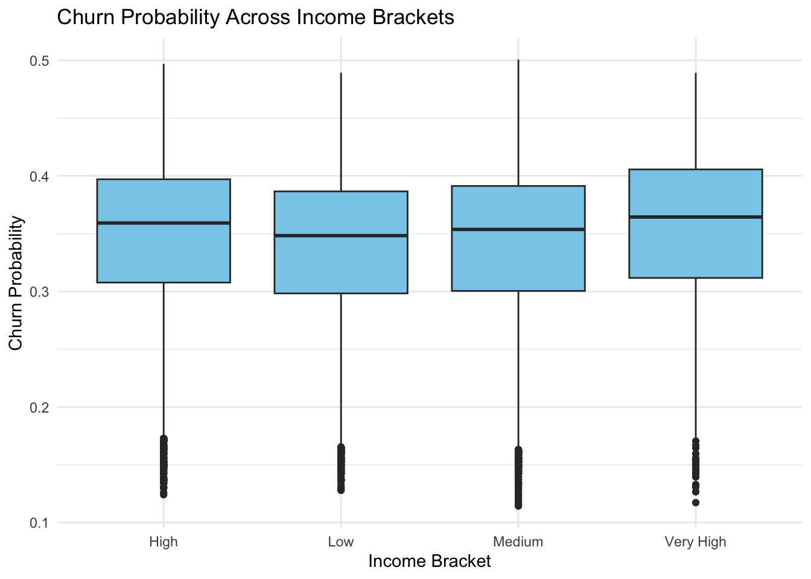
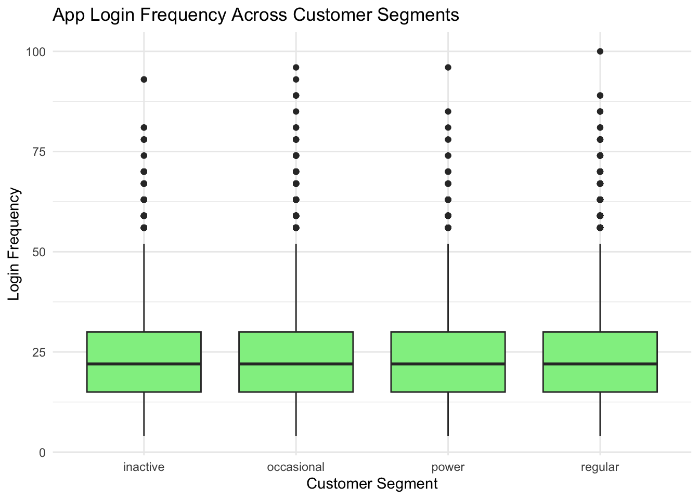
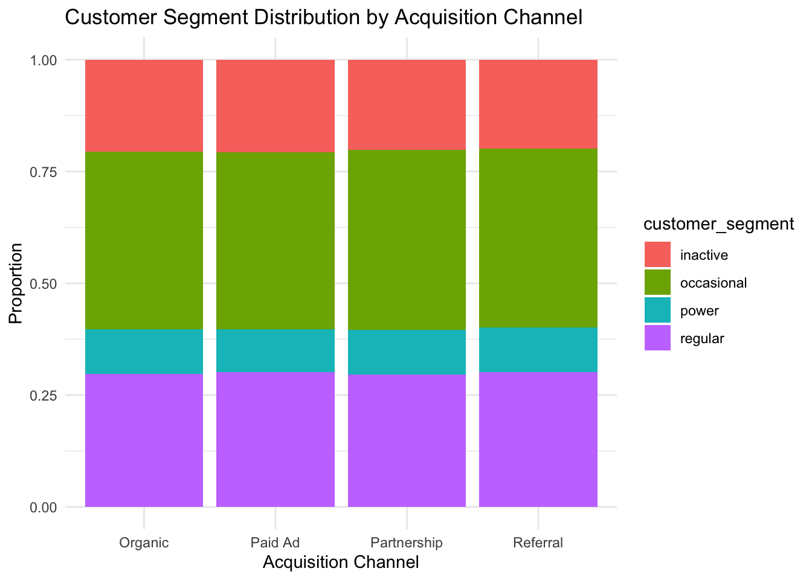
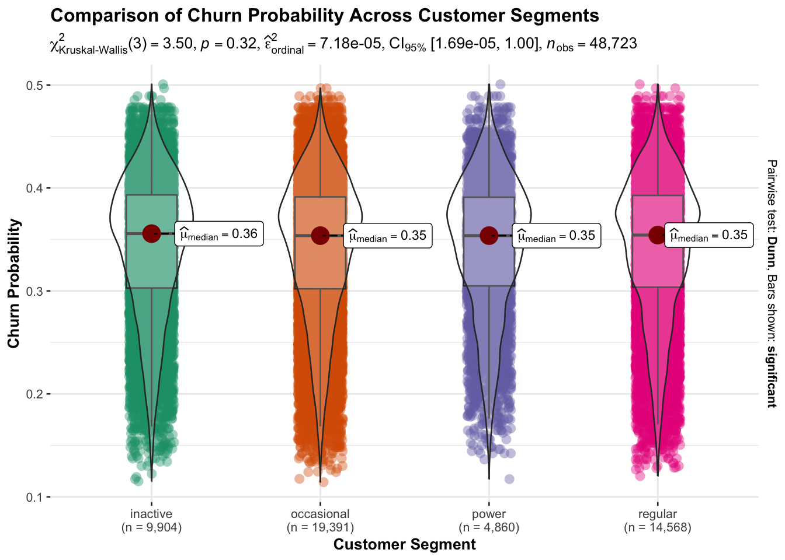
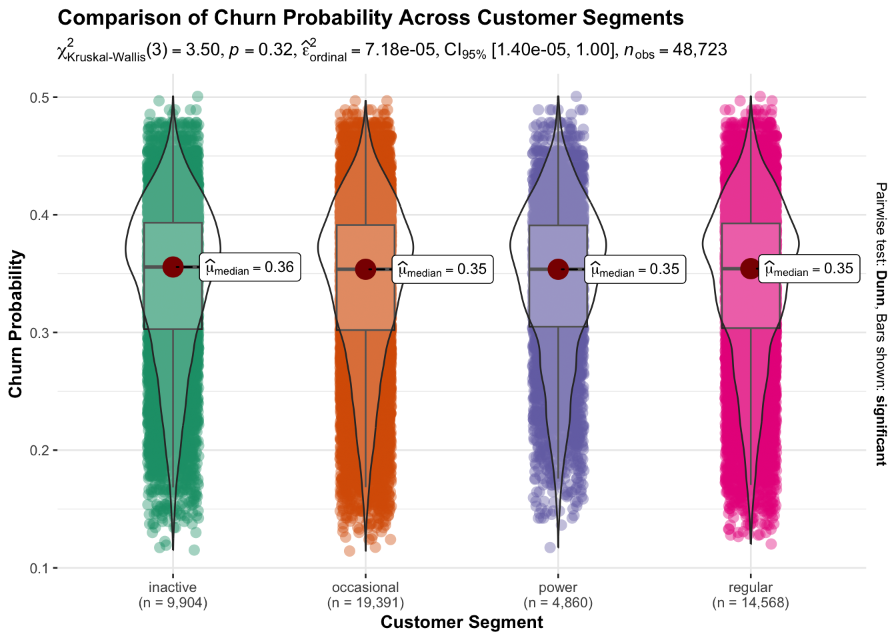
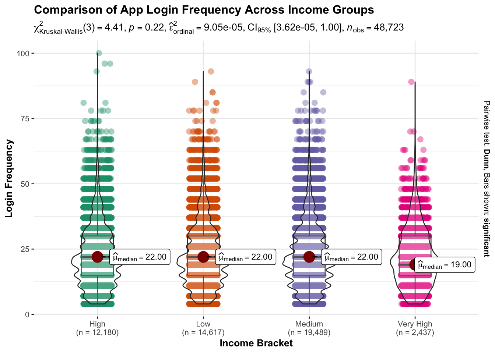

pacman::p_load(tidyverse, ggplot2, ggstatsplot, plotly, scales, corrplot)Confirmatory Data Analysis
1. Installing and launching required R packages
Before performing the confirmatory analysis, the required R packages are loaded. These packages support data manipulation (tidyverse), statistical visualization (ggplot2), interactive graphics (plotly), scaling functions (scales), and correlation visualization (corrplot).
2. Loading the data
The processed fintech customer dataset used in the exploratory analysis is loaded again for confirmatory analysis.
df_customers <- read_csv("data/colombia_customers_processed.csv")Rows: 48723 Columns: 55
── Column specification ────────────────────────────────────────────────────────
Delimiter: ","
chr (14): gender, location, income_bracket, occupation, education_level, ma...
dbl (29): customer_id, age, household_size, active_products, app_logins_fre...
lgl (7): savings_account, credit_card, personal_loan, investment_account, ...
date (5): first_tx, last_tx, last_survey_date, last_transaction_date, first...
ℹ Use `spec()` to retrieve the full column specification for this data.
ℹ Specify the column types or set `show_col_types = FALSE` to quiet this message.3. Confirmatory Data Analysis
The objective of this section is to validate relationships observed during the exploratory data analysis (EDA) stage by performing statistical hypothesis testing. Inferential statistical methods are applied to determine whether observed differences or relationships between variables are statistically significant.
All hypothesis tests are conducted at a significance level of α = 0.05.
3.1 Income Bracket vs Churn Probability (ANOVA)
Hypothesis
H0:
The mean churn probability is equal across all income brackets.
H1:
At least one income bracket has a different mean churn probability.
Statistical Test
A one-way ANOVA test is conducted to determine whether churn probability differs across income groups.
anova_income <- aov(churn_probability ~ income_bracket, data = df_customers)
summary(anova_income) Df Sum Sq Mean Sq F value Pr(>F)
income_bracket 3 1.09 0.3622 80.9 <2e-16 ***
Residuals 48719 218.11 0.0045
---
Signif. codes: 0 '***' 0.001 '**' 0.01 '*' 0.05 '.' 0.1 ' ' 1Visualization
ggplot(df_customers, aes(x = income_bracket, y = churn_probability)) +
geom_boxplot(fill = "skyblue") +
theme_minimal() +
labs(
title = "Churn Probability Across Income Brackets",
x = "Income Bracket",
y = "Churn Probability"
)
Insight
The ANOVA test shows a significant difference in churn probability across income brackets (p < 0.001). While the distributions overlap, higher income groups, particularly the Very High bracket, tend to exhibit slightly higher median churn probabilities compared to other income levels.
3.2 Customer Segment vs App Login Frequency (ANOVA)
Hypothesis
H0:
The mean app login frequency is equal across all customer segments.
H1:
At least one customer segment has a different mean login frequency.
Statistical Test
A one-way ANOVA test is used to examine whether customer engagement differs between segments.
anova_segment <- aov(app_logins_frequency ~ customer_segment, data = df_customers)
summary(anova_segment) Df Sum Sq Mean Sq F value Pr(>F)
customer_segment 3 307 102.2 0.74 0.528
Residuals 48719 6727191 138.1 Visualization
ggplot(df_customers, aes(x = customer_segment, y = app_logins_frequency)) +
geom_boxplot(fill = "lightgreen") +
theme_minimal() +
labs(
title = "App Login Frequency Across Customer Segments",
x = "Customer Segment",
y = "Login Frequency"
)
Insight
The ANOVA test shows no significant difference in app login frequency across customer segments (p = 0.528 > 0.05). This suggests that engagement levels are relatively similar among inactive, occasional, power, and regular users, with no segment showing substantially higher login activity.
3.3 Acquisition Channel vs Customer Segment (Chi-Square Test)
Hypothesis
H0:
Acquisition channel and customer segment are independent.
H1:
Acquisition channel and customer segment are associated.
Statistical Test
A Chi-square test of independence is used to determine whether the distribution of customer segments differs across acquisition channels.
channel_segment_table <- table(df_customers$acquisition_channel, df_customers$customer_segment)
chisq.test(channel_segment_table)
Pearson's Chi-squared test
data: channel_segment_table
X-squared = 6.2198, df = 9, p-value = 0.7177Visualization
ggplot(df_customers, aes(x = acquisition_channel, fill = customer_segment)) +
geom_bar(position = "fill") +
theme_minimal() +
labs(
title = "Customer Segment Distribution by Acquisition Channel",
x = "Acquisition Channel",
y = "Proportion"
)
Insight
The Chi-square test shows no significant association between acquisition channel and customer segment (p = 0.718 > 0.05). Customer segment distributions appear similar across Organic, Paid Ad, Partnership, and Referral channels.
3.4 Satisfaction Score vs Churn Probability (Correlation Test)
Hypothesis
H0:
There is no correlation between satisfaction score and churn probability.
H1:
There is a significant correlation between satisfaction score and churn probability.
Statistical Test
A Pearson correlation test is conducted to measure the strength and significance of the relationship between satisfaction score and churn probability.
correlation_test <- cor.test(df_customers$satisfaction_score, df_customers$churn_probability)
print(correlation_test)
Pearson's product-moment correlation
data: df_customers$satisfaction_score and df_customers$churn_probability
t = -41.127, df = 48721, p-value < 2.2e-16
alternative hypothesis: true correlation is not equal to 0
95 percent confidence interval:
-0.1917411 -0.1745782
sample estimates:
cor
-0.1831736 Visualization
ggstatsplot::ggbetweenstats(
data = df_customers,
x = customer_segment,
y = churn_probability,
type = "np",
pairwise.comparisons = TRUE,
pairwise.display = "significant",
mean.ci = TRUE,
conf.level = 0.95,
title = "Comparison of Churn Probability Across Customer Segments",
xlab = "Customer Segment",
ylab = "Churn Probability"
)
Insight
The Pearson correlation test shows a weak but statistically significant negative relationship between satisfaction score and churn probability (r = −0.183, p < 0.001). This suggests that customers with higher satisfaction scores tend to have slightly lower churn risk, although the overall relationship is modest.
4. Statistical Group Comparison
4.1 Customer Segment vs Churn Probability
To further validate whether churn risk differs across customer segments, a statistical group comparison is conducted. The visualization below compares churn probability across segments and includes pairwise statistical comparisons with confidence intervals.
ggstatsplot::ggbetweenstats(
data = df_customers,
x = customer_segment,
y = churn_probability,
type = "np",
pairwise.comparisons = TRUE,
pairwise.display = "significant",
mean.ci = TRUE,
conf.level = 0.95,
title = "Comparison of Churn Probability Across Customer Segments",
xlab = "Customer Segment",
ylab = "Churn Probability"
)
Insight:
The group comparison test shows no significant difference in churn probability across customer segments (p = 0.32 > 0.05). Median churn probabilities are very similar across inactive, occasional, power, and regular segments, indicating comparable churn risk among these groups.
4.2 Income Bracket vs App Login Frequency
To further examine whether customer engagement varies across income levels, a statistical group comparison is conducted. The visualization below compares app login frequency across income brackets and includes pairwise statistical comparisons with confidence intervals.
ggstatsplot::ggbetweenstats(
data = df_customers,
x = income_bracket,
y = app_logins_frequency,
type = "np",
pairwise.comparisons = TRUE,
pairwise.display = "significant",
mean.ci = TRUE,
conf.level = 0.95,
title = "Comparison of App Login Frequency Across Income Groups",
xlab = "Income Bracket",
ylab = "Login Frequency"
)
Insight:
The group comparison test shows no significant difference in app login frequency across income brackets (p = 0.22 > 0.05). Median login frequencies are very similar across High, Low, Medium, and Very High income groups, indicating comparable engagement levels among these customers.